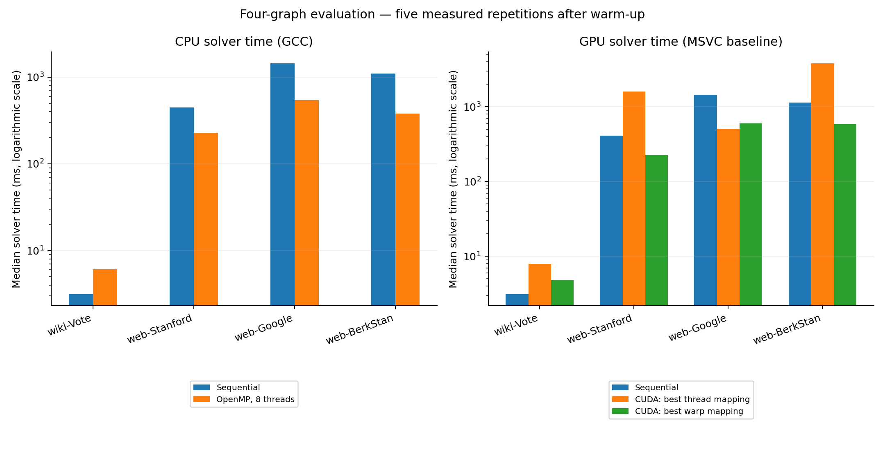
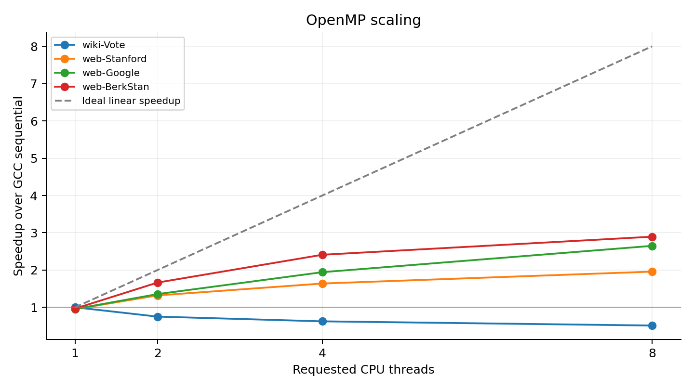
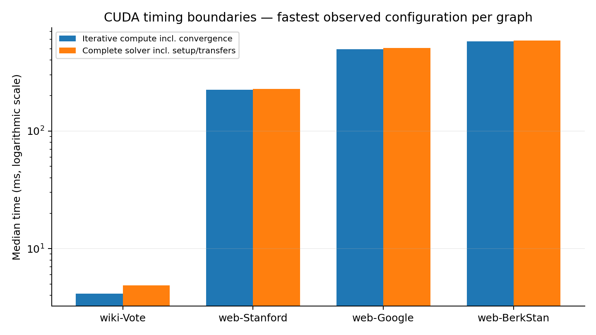
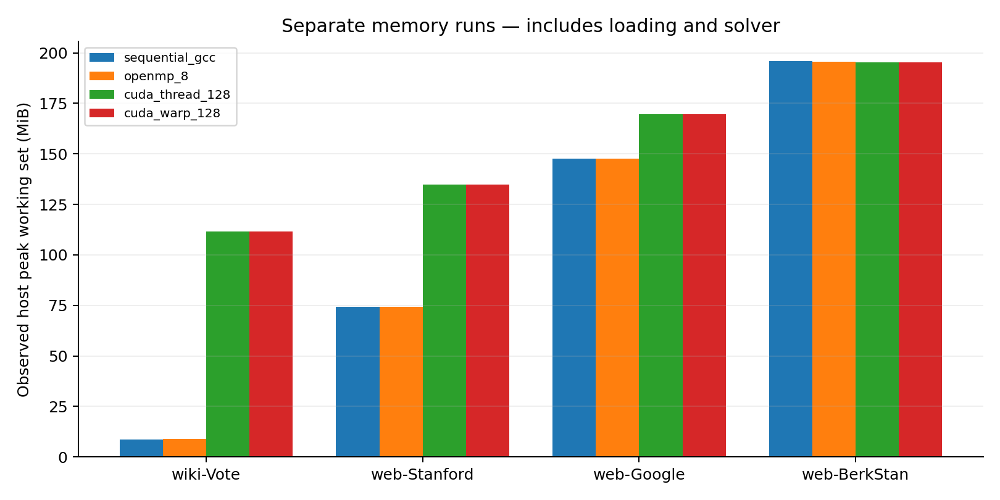

23 October 2026 · Four fixed graphs · FP64 · RTX 4060 Laptop GPU
The completed experiments show graph-dependent CPU and GPU performance. Parallelism helps larger workloads, while the best GPU work assignment depends on incoming-degree structure.
Sequential pull PageRank, static-schedule OpenMP at 1/2/4/8 threads, and CUDA thread-per-vertex and warp-per-vertex mappings at 128/256/512 threads per block. Uniform initial rank and teleportation, uniform dangling redistribution, damping 0.85, L1 difference < 1e-10 and a 1000-iteration cap are shared. Each benchmark uses one warm-up per configuration followed by five measured repetitions. The CSVs retain median, minimum and maximum; these ranges are not confidence intervals.
Solver timing excludes file parsing and CSR construction. CPU timing includes solver allocation and initialization. CUDA end-to-end solver timing includes context setup, allocations, CSR upload, initialization, iterations, result download and cleanup; compute timing includes synchronization, scalar convergence transfers and host checks. Warmed measurements exclude cold-start context cost. Input loading is reported separately in available environment logs and is not included in solver speedups.
OpenMP speedups use the GCC sequential baseline from the same run. CUDA speedups use the NVCC/MSVC sequential baseline from the same run. Absolute CPU and GPU times can be displayed together, but do not treat cross-compiler ratios as controlled algorithm-only speedups. CUDA entries below select the fastest observed block size within each mapping; this is tuning on these same datasets, not held-out validation.
| Graph | Vertices | Edges | Dangling | Median in-degree | Max in-degree | Edges into top 1% |
|---|---|---|---|---|---|---|
| wiki-Vote | 7,115 | 103,689 | 1005 | 0.0 | 457 | 13.7% |
| web-Stanford | 281,903 | 2,312,497 | 172 | 2.0 | 38,606 | 50.7% |
| web-Google | 875,713 | 5,105,039 | 136259 | 1.0 | 6,326 | 28.6% |
| web-BerkStan | 685,230 | 7,600,595 | 4744 | 2.0 | 84,208 | 54.7% |
SNAP directed edge lists were remapped to consecutive IDs in first-appearance order. Directions, duplicate edges and self-loops were retained. Only vertices appearing in edges were included; missing isolated vertices cannot be inferred. Exact source and processed checksums are retained in each dataset's metadata. No new graphs were added for this evaluation.
Sources: wiki-Vote, Stanford, Google, Berkeley–Stanford. Dataset pages supply the original-paper citations.
| Graph | GCC seq ms | OMP 8 ms | OMP speedup | MSVC seq ms | CUDA thread ms | CUDA warp ms |
|---|---|---|---|---|---|---|
| wiki-Vote | 3.14 | 6.11 | 0.51 | 3.11 | 7.93 | 4.85 |
| web-Stanford | 444.82 | 227.07 | 1.96 | 413.26 | 1,598.31 | 228.12 |
| web-Google | 1,442.94 | 544.54 | 2.65 | 1,448.08 | 506.98 | 597.07 |
| web-BerkStan | 1,097.27 | 378.99 | 2.90 | 1,139.50 | 3,826.60 | 588.30 |



All selected benchmark rows meet the 1e-9 L1 rank-agreement threshold against their sequential reference. The largest recorded L1 disagreement is 2.42e-14. All configurations agree on iteration count within each graph. Existing correctness tests additionally cover dangling nodes, all-dangling graphs, self-loops, duplicate edges, iteration limits and malformed inputs. NVIDIA memory checking passed the CUDA synthetic test suite with zero errors; this is not a full performance profile.
| Graph | Iterations | Largest recorded rank L1 difference |
|---|---|---|
| wiki-Vote | 29 | 3.37e-16 |
| web-Stanford | 118 | 1.01e-14 |
| web-Google | 118 | 2.42e-14 |
| web-BerkStan | 120 | 1.3e-14 |
| Graph | Configuration | Host peak observed MiB | GPU device delta sampled MiB |
|---|---|---|---|
| wiki-Vote | sequential_gcc | 8.7 | — |
| wiki-Vote | openmp_8 | 8.8 | — |
| wiki-Vote | cuda_thread_128 | 111.6 | 101.8 |
| wiki-Vote | cuda_warp_128 | 111.6 | 96.6 |
| web-Stanford | sequential_gcc | 74.5 | — |
| web-Stanford | openmp_8 | 74.3 | — |
| web-Stanford | cuda_thread_128 | 134.8 | 130.6 |
| web-Stanford | cuda_warp_128 | 134.8 | 130.6 |
| web-Google | sequential_gcc | 147.5 | — |
| web-Google | openmp_8 | 147.7 | — |
| web-Google | cuda_thread_128 | 169.6 | 168.6 |
| web-Google | cuda_warp_128 | 169.6 | 168.6 |
| web-BerkStan | sequential_gcc | 195.8 | — |
| web-BerkStan | openmp_8 | 195.7 | — |
| web-BerkStan | cuda_thread_128 | 195.2 | 178.6 |
| web-BerkStan | cuda_warp_128 | 195.2 | 178.6 |

These are separate single-run resource observations, not benchmark timing samples. Host values are OS peak working sets observed during 5 ms polling; a final short-lived peak can be missed. They include parser/CSR temporary storage, solver allocations and runtime overhead. GPU values are sampled device-wide NVML usage above a pre-run baseline; they are estimates, may miss transient allocations and may include other activity. They are not per-process VRAM peaks. The same 128-thread block size is used for both GPU mappings in these resource runs; it is not necessarily the fastest configuration.
{
"platform": "Windows-11-10.0.26300-SP0",
"cpu": "{\n \"Name\": \"Intel(R) Core(TM) i7-14650HX\",\n \"NumberOfCores\": 16,\n \"NumberOfLogicalProcessors\": 24\n}",
"physical_cores": 16,
"logical_cpus": 24,
"ram_gib": 15.710746765136719,
"gpu": "NVIDIA GeForce RTX 4060 Laptop GPU, 592.82, 8188 MiB, 8.9",
"gcc": "g++ (Rev6, Built by MSYS2 project) 16.1.0\nCopyright (C) 2026 Free Software Foundation, Inc.\nThis is free software; see the source for copying conditions. There is NO\nwarranty; not even for MERCHANTABILITY or FITNESS FOR A PARTICULAR PURPOSE.",
"cuda": "nvcc: NVIDIA (R) Cuda compiler driver\nCopyright (c) 2005-2026 NVIDIA Corporation\nBuilt on Sun_Sep_01_02:23:07_Pacific_Standard_Time_2026\nCuda compilation tools, release 13.4, V13.4.92\nBuild cuda_13.4.r13.4/compiler.38855100_0"
}Build flags: GCC C++17 -O2 -Wall -Wextra -Wpedantic (-fopenmp for OpenMP). CUDA C++17 -O2 -arch=sm_89 --fmad=false -Xcompiler=/Zc:preprocessor, with the installed Visual Studio host compiler. Source hashes are in environment.json.
CPU rows use the saved wiki-Vote, user-run Stanford, Google and Berkeley–Stanford CSVs. Google and Berkeley–Stanford CUDA rows use the later combined-mapping runs. The earlier noisy Berkeley–Stanford run is archived and not pooled into the selected run. CUDA wiki-Vote and Stanford rows were collected to complete the matrix. Measurements were made across sessions, with uncontrolled background load, laptop power/thermal state and CPU placement; they are exploratory local results. No claim of statistical significance, universal GPU superiority, or an optimized-framework comparison is supported.
The four graphs contain up to 875,713 vertices and 7,600,595 edges. Describe this measured scale explicitly rather than implying billion-edge evaluation. The synopsis's implementation and evaluation dimensions are represented, with approximate resource measurements and timing/compiler limitations disclosed. No additional kernels or datasets are required to write the project report.
Summary table · All configurations and source paths · Memory observations · Graph statistics · Hardware, methods and source hashes. Selected raw CSVs are in raw/; earlier results are preserved in original_results/.